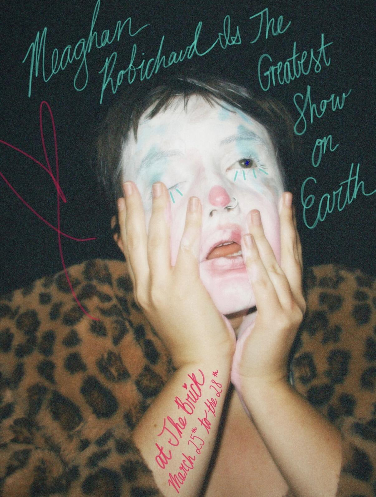
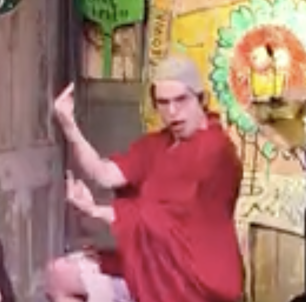
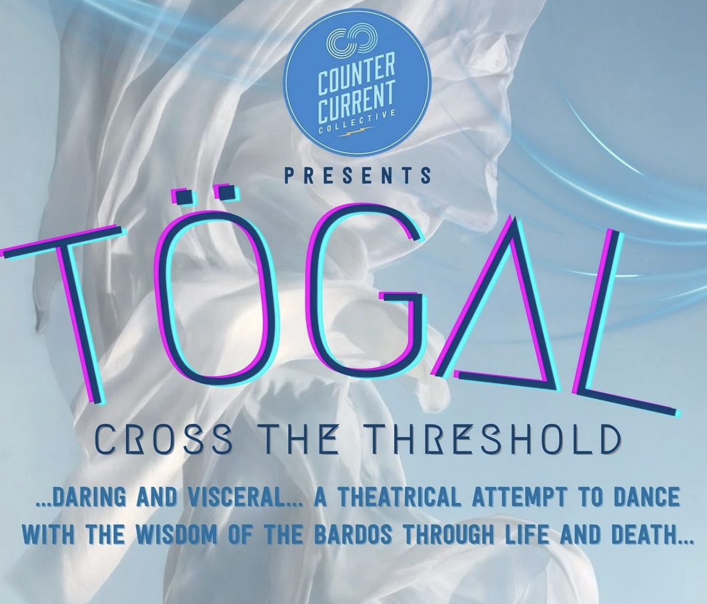

Rhymes With Orange is an experimental collective I've been in since 2020. We've performed at festivals, theaters, living rooms, weddings, etc. We mostly veer silly but also enjoy doing weird.

About/Contact
Theater
Music
Other Projects
.
I like making theatrical work that is fun and surprising, especially devised theater and clowning. I'm also interested in traditional theater, but don't have much experience with it. I love making music for theater as well.
Rhymes With Orange is an experimental collective I've been in since 2020. We've performed at festivals, theaters, living rooms, weddings, etc. We mostly veer silly but also enjoy doing weird.

I did background guitar and had a little stage time in Meaghan Robichaud is the Greatest Show on Earth, a bouffon show that brought me and many others immense joy.

I've done several solo & group performances at the Idiot Hour, an NYC avant clown variety show hosted by Matthew Silver.

I was one of six deviser/actors in Togal, a performance put on by Counter Current Collective in mid-coast Maine based on teachings from Tibetan Buddhism.